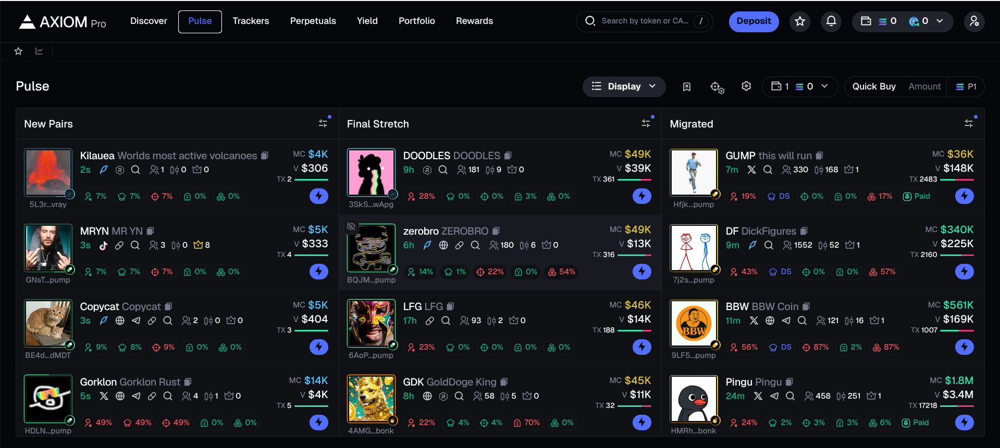
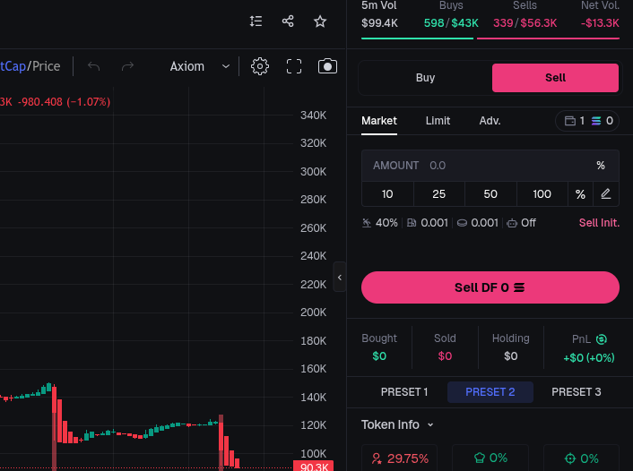
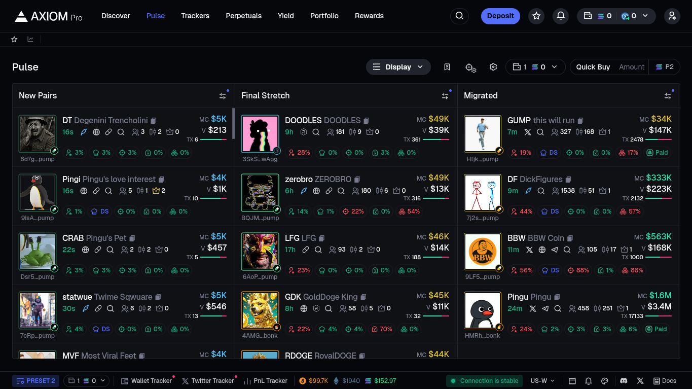
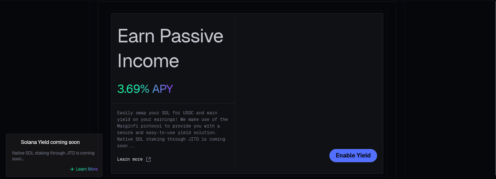
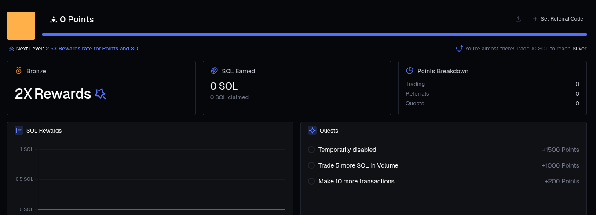

Para registrarte en AxiomPro directamente, puedes entrar desde aquí.
Aqui te enseñare a cómo utilizar el bot de AxiomPro correctamente de manera simple y sencilla.
Indice:
Cómo registrarse:
Registarse en Axiom solo toma pocos pasos...
Primero de todo, entra en el enlace de aquí para así obtener el ansiado -10% menos en comisiones junto a recompensas adicionales. Ahí te registraras con tu correo, cuenta de Google o de incluso Phantom.

Y así de fácil puedes empezar a utilizar todas las funciones de AxiomPro junto a su bot.
Cómo depositar SOL:
Al terminar el registro tendras que depositar solana para poder empezar.
Desde ahí puedes comparar directamente solana en la pestaña "Buy" o incluso en la pestaña "Deposit" puedes obtener Solana desde cualqiuer aplicación como Phantom copiando el enlace y pegandolo en la otra plataforma.

Una vez depositado ya puedes continuar, más tarde podras volver a depositar o intercambiar a €.
Cómo comprar tu primer token:
Puedes encontrar cualqiuer token en la barra de busqueda o en la pestalla de Pulse puedes encontrar nuevas memecoins en la pestalla "Pulse".
Luego para comprar el token tienes 2 opciones:
- Mercado de compra: Cuando quieras cerrar tu inversión, ya sea con ganancia o pérdida, entra en la opción de venta del mercado, selecciona el 100% del token adquirido y confirma la venta presionando el botón de "Buy".
- Compra automática: Solo tienes que indicar cuántas monedas Solana deseas invertir, elegir un token con baja capitalización de mercado y hacer clic en 'Buy'. El sistema ejecutará la compra automáticamente cuando el precio alcance el objetivo que hayas establecido.
Cómo vender un token:
Si decides vender el token que adquiriste, ya sea con ganancias o pérdidas, accede a la opción de venta en el mercado, selecciona el 100% del token y confirma la operación presionando el botón 'Sell'.
El comercio de nuevos tokens:
Pulse es la sección donde se listan los tokens más recientes de la red Solana. Dentro de ella, la categoría 'Migrados' suele ser la más destacada. Sin embargo, debido al alto riesgo que implican estos activos, es esencial realizar un análisis e investigación exhaustivos antes de invertir.
Rendimiento:
Ahora puedes generar ingresos pasivos en la nueva categoría de ganancias de la plataforma, apostando USDC con un rendimiento del 6,13%. Próximamente, esta funcionalidad estará disponible también para Solana.
Recompensas adicionales:
Puedes generar tu propio código de invitación o enlace de referencia en la categoría de recompensas. Al usarlo, ganarás puntos para futuros lanzamientos aéreos y recibirás el 30% de los honorarios que generen las personas que se registren mediante tu enlace.
Espero que esta guía de Axiom Trade te haya sido útil. Personalmente, considero que es una plataforma excelente para operar con monedas meme y futuros. Además, es mucho más rápida que Bullx, por lo que definitivamente vale la pena probarla.
Ya sabes, para registrate simplemente entra en https://axiom.trade/@stratmate, asegurandote de que utilizas el codigo "stratmate".
El comercio de criptomonedas conlleva un alto nivel de riesgo. Si eres principiante, asegúrate de entender completamente estos riesgos. La información compartida en este post refleja mi OPINIÓN y no debe considerarse como un consejo financiero. Eres el único responsable de cómo gestionas tu dinero."